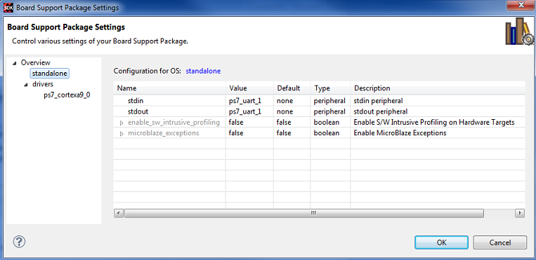

The
Board Support Package settings page enables you toconfigure parameters of the OS and
its constituent libraries.
Note: Options for only the libraries that you enabled in
the Overview page will be visible. Options for the OS/standalone
supported peripherals, that are present in the hardware platform, are also shown
on the page.
